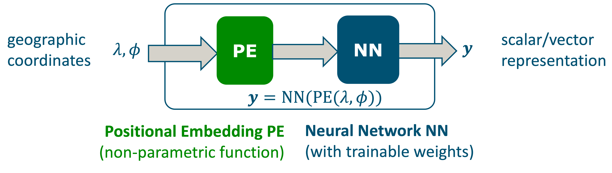
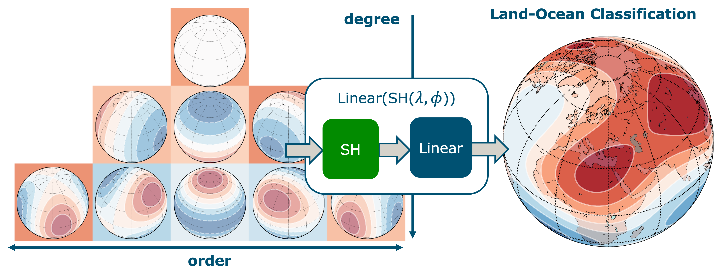
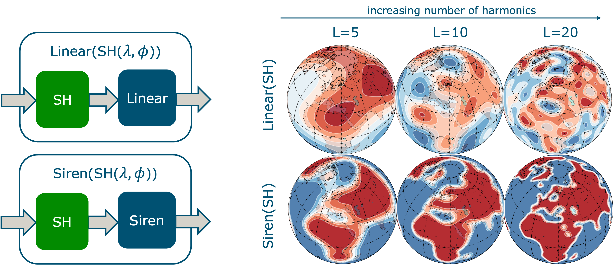

ICLR 2024 (spotlight) --- Halle B #266 Wed 8 May 4:30 p.m. 6:30 p.m.
Authors: Marc Rußwurm, Konstantin Klemmer, Esther Rolf, Robin Zbinden, Devis Tuia
[ ICLR Page ] [ Paper - Open Review ] [ Paper - ArXiv ] [ Video ] [ Poster ] [ GitHub ]


Abstract
In this work, we proposes a location encoder for globally distributed geographic data that combines spherical harmonic basis functions with sinusoidal representation networks (Sirens). We systematically evaluate positional embeddings and neural network architectures across various benchmarks and synthetic evaluation datasets. In contrast to previous approaches that require the combination of both positional encoding and neural networks to learn meaningful representations, we show that both spherical harmonics and sinusoidal representation networks are competitive on their own but set state-of-the-art performances across tasks when combined.
Video
Location Encoders
Location encoders are learnable continuous functions that project longitude latitude coordinates into a vector representation. Loction encoders are typically implemented as a non-parametric positional embedding followed by a neural network that provides learnable weights. Effectively, these location encoders learn an implicit neural (geo)representation of the training data. After being trained on support point locations, they scale well to many test data points, as they just perform inference with a small neural network in linear time. that are paired with ReLU neural networks like FcNet.
Proposition: Spherical Harmonics (SH) as Positional Embeddings
Existing Positional Embedding functions rely on sine cosine basis functions (like in Fourier Series). However, these basis functions assume a rectangular domain of longitude and latitude. We instead advocate for Spherical Harmonic basis function that, even with a linear combination of weights, can capture complex functions on the sphere.
Proposition: Siren (with sine activations) as Neural Network
The linear combination of weights with spherical harmonics can be interpreted as a location encoder with a single linear "neural network" layer. Replacing this linear network with a more complex Siren network (a MLP with sine activation functions) increases the capacity substantially and allows the function to encode higher-resolution functions.
Conclusion & Takeaways
Overall, we can recommend: Siren as Neural Network for any location encoding problem and Spherical Harmonic basis functions for global geographic problems where the spherical geometry matters.
More details and experiments are in paper and poster below!
Paper

Poster

Reference & Bibtex
please cite the paper using the following reference:
Rußwurm, M., Klemmer, K., Rolf, E., Zbinden, R., & Tuia, D. (2024). Geographic location encoding with spherical harmonics and sinusoidal representation networks. Proceedings of the International Conference on Learning Representations (ICLR).
or import the following bibtex:
@inproceedings{russwurm2024locationencoding,
title={Geographic Location Encoding
with Spherical Harmonics
and Sinusoidal Representation Networks},
author={Marc Rußwurm and
Konstantin Klemmer and
Esther Rolf and
Robin Zbinden and
Devis Tuia},
booktitle = {Proceedings of the International
Conference on Learning Representations (ICLR)},
year = {2024},
url = {https://iclr.cc/virtual/2024/poster/18690}
}